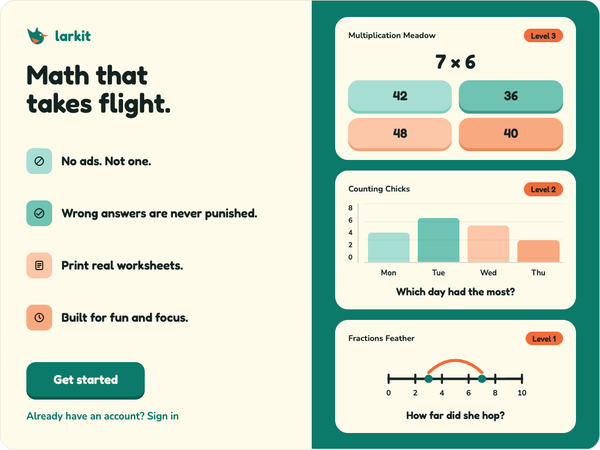
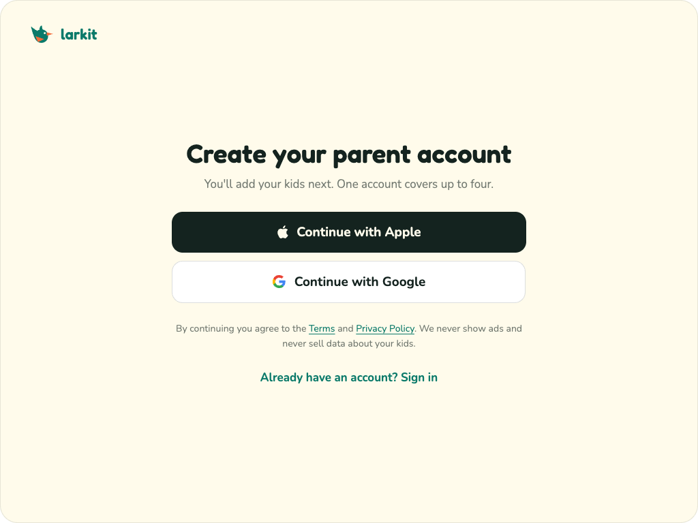
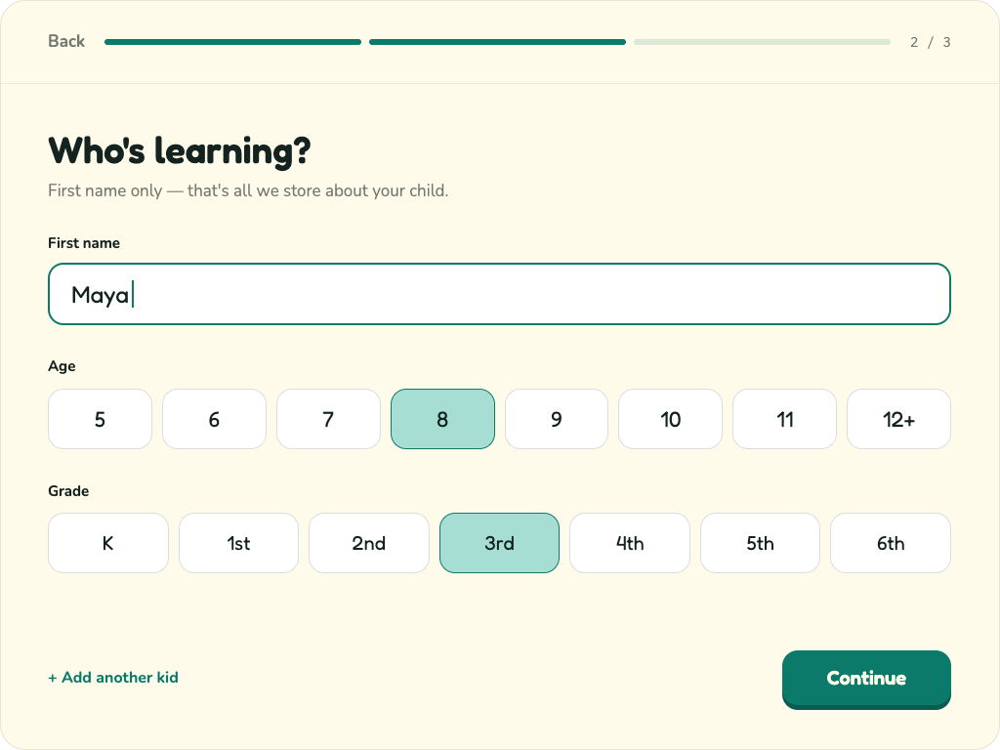
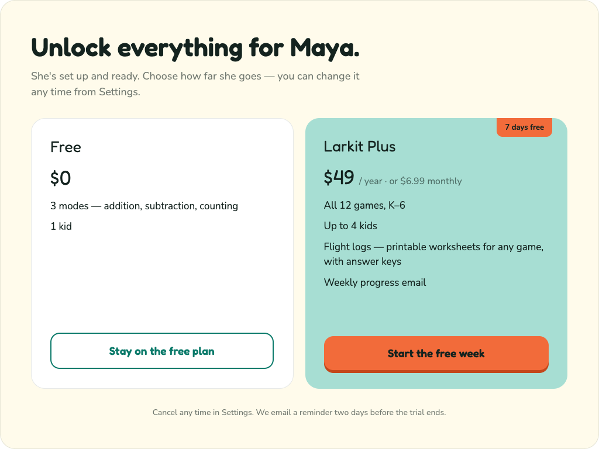
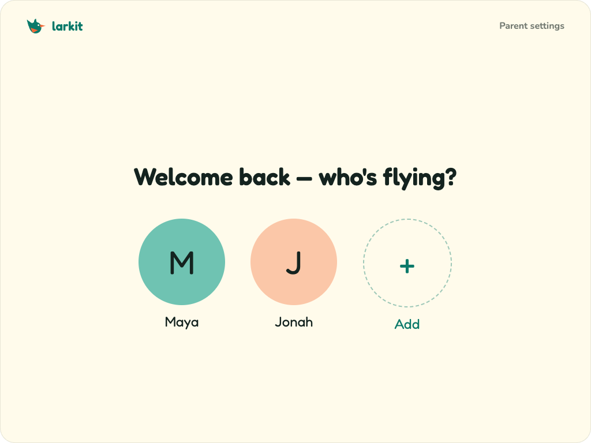
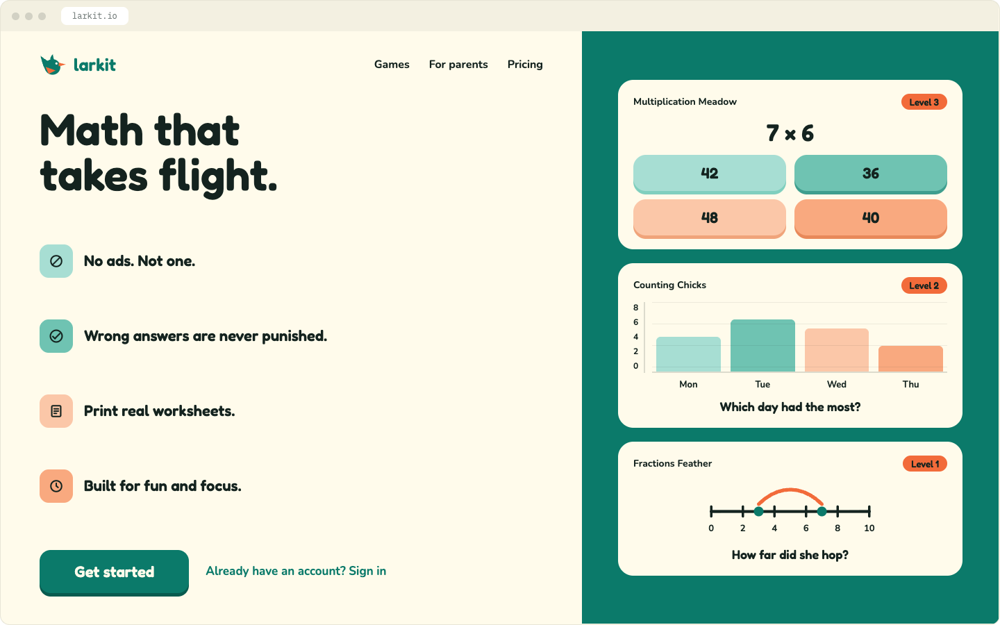

larkit.io · formerly kidmathexplorer.com · Aug 2026
NEW · NOT YET PUSHEDSince the last pushlast push: 2 Aug 2026 · sections 01–19
Anything a developer still has to implement carries the orange badge above, beside its section heading. Everything unbadged is already live. The full running list, including work that lives outside this guide, is in CHANGELOG.md.
§14 · game modes renamed — all twelve modes move to one formula, [plain skill] + [alliterating bird word]: Addition Acorns, Subtraction Swoop, Multiplication Meadow, Division Dive, Fractions Feather, Counting Chicks, Comparison Crow, Time Tweet, Money Magpie, Shapes Shell, Measuring Wings, Place Value Perch. Old names are dead everywhere — knock-on edits in §13 (in-game header) and §15 (flight-log header), plus store copy.
§20 · first flight — signup & onboarding (new section) — approved flow: value page → parent account (Apple/Google) → add a kid → soft paywall → profile picker, plus the voice rule that the account flow is plain English and bird voice stays on kid-facing screens. Screens in Larkit Auth Onboarding.dc.html (2a).
§15 · flight logs rebuilt — three fixed blocks (stacked / inline / thought problem), single-rule stacked items in one digit column, number banks on pick-two prompts, no decorative colour, score box in the footer. Generator must also obey the level range and never fill the result slot.
§14 · card icons — one Ink math glyph in the 38px cream well; home grid now lists all twelve modes.
Login, signup & onboarding — three directions (iPad + web desktop) in Larkit Auth Onboarding.dc.html. Direction not chosen yet — do not build.
01 · Color
The cream stays. One saturated primary (Lark Teal) carries the brand; one warm accent (Sun) is reserved for the beak, the wing, and moments of delight. Every pairing below is checked against WCAG 2.1 AA.
Cream
#FFFBEB
Page background. Never text.
Lark Teal · primary
#0B7A6A
5.05:1 on cream — AA all text.
Sun · accent
#F26B3A
2.92:1 on cream — shapes & fills only, never small text.
Ember
#C4471B
4.75:1 on cream — the accent when it must be text.
Ink
#14231F
15.7:1 on cream — body copy, worksheets.
larkit
Night / Mint
#10221E · #4FD1BC
Dark mode pair — 8.81:1.
Cream on Teal — 5.05:1 ✓ AA
Ink on Cream — 15.7:1 ✓ AAA
Ink on Sun — 5.38:1 ✓ AA
Cream on Sun — 2.92:1 ✗ don't
02 · Wordmark typeface
All four candidates set lowercase at 600. Fredoka 600 is the pick — the roundest terminals of the four, a single-storey a that reads as friendly to a six-year-old, and a tight rk pair that keeps the word compact next to the mark. Nunito 700 is the body face.
larkitFredoka 600 — chosen
larkitBaloo 2 700 — heavier, more cartoon
larkitNunito 900 — best for body, flat as a logo
larkitPoppins 600 — geometric but cool, less kid
DISPLAY / FREDOKA 500–600
Count by fives
BODY / NUNITO 400–700
Drag the ten-frame to fill it. 0123456789 × ÷ + −
03 · The mark
A lark built from five flat shapes: a circle body, a curved swept wing behind it, a crest quiff, a dart beak, and an accent wing dart clipped to the body circle so it always meets the edge cleanly. No strokes, no gradients — so it survives a photocopier, a 16px favicon, and a kid's crayon.
FULL COLOR / CREAM
DARK / MINT + PEACH
100% BLACK / WORKSHEET
100% WHITE / KNOCKOUT
SIZE TEST — 512 / 180 / 64 / 32 / 16 PX, ACTUAL SIZE
64
48
32
16
larkit.io — browser tab
At 16 and 32px the crest merges into the head. That's expected — the favicon build drops the crest, enlarges the eye dot, widens the wing dart, and sits the bird in cream on a solid teal tile so it holds up in a browser tab.
x = 30% of mark height
Clear space & minimum size
Keep clear space of x on all four sides, where x is 30% of the mark's height. Nothing — type, rules, photos, page edges — enters that box.
Minimum sizes: mark alone 16px (screen) / 8mm (print). Lockup with wordmark 96px wide; below that, use the mark alone.
04 · Lockups
larkit
larkit
larkitWorksheet header
05 · Do & don't
Do — flat fills, teal body, Sun wing and beak.
Don't — rotate, shadow, outline, or bevel the mark.
Don't — recolor outside the palette.
Don't — stretch, squash, or redraw the bird by hand.
The lark always faces right — toward the work, never back at the reader.
One bird per surface. She is a mark, not an illustration set.
On photos or busy art, use the solid white knockout on a teal circle — never the full-color mark.
Never add eyelashes, hats, arms, or a smile. The eye dot is the whole face.
06 · Asset set
{{ a.file }}{{ a.use }}
All files sit in /brand in this project, exported from the same geometry shown above.
The page you're reading is the pattern. Cream paper, a two-level grid, and a sparse scatter of math marks — it's the reason larkit doesn't look like every other kids' app.
The grid
Minor squares 24px, major every 120px (5 minor).
Lines are Lark Teal at 5% alpha (minor) and 8% (major), 1px, never darker.
Grid origin is the top-left of the page — never scaled or rotated.
In print, use 10% K instead of teal so it doesn't eat ink.
Set in Fredoka; shapes are 2.5px outlines. No fills, no icons, no illustration.
Teal or Sun only, 30–50% opacity, sizes 30–46px.
Density: roughly one mark per 150px of page height, irregular spacing, small random rotations (±12°).
Where the pattern never goes
Behind body copy at full strength — marks sit in the outer margins, never under a paragraph they'd compete with.
Inside the logo clear-space box.
On worksheets a child writes on — the answer area stays plain cream or white.
On the dark theme: grid only, at Mint 8%. No math marks.
08 · Play area
Where kids actually solve problems. The current build uses candy gradients — pink, purple, cyan gloss, white text. This replaces them with two light values of each brand hue — flat, cohesive, and every label the same Ink so contrast never depends on the answer.
3/15
Lv. 13 streak
12 ÷ 6 = ?
True
False
Binary pairs use Seafoam and Apricot at equal weight — never green/red, and never one dark tile against one light: weight must not hint at the answer.
Reward star — Sun, never goldSun #F26B3A
Answer palette
7
7
7
7
Two brand hues, two values each: Seafoam #A7DED3 · Teal Mid #6FC3B2 · Apricot #FBC7A8 · Sun Light #F9A97F. Nothing outside the palette — no third hue.
One label color everywhere: Ink #14231F — 10.88 / 7.85 / 10.73 / 8.53 ✓ AA. Never cream or a colored label on a tile.
Flat fill + a 5px solid bottom edge (darker shade). No gradients, no gloss.
Order is fixed — Seafoam, Teal Mid, Apricot, Sun Light in reading order (left to right, top to bottom) — so position stays learnable. Tile color never encodes correctness.
Problem type: Fredoka 600, 52px (stacked sums 72px). Prompts 34–40px. Never below 24px.
Answer tiles 76px tall, keypad keys 64px — both well over the 44px minimum for small hands.
Keypad digits carry the same four tints, one per row (Seafoam 1–3, Teal Mid 4–6, Apricot 7–9, Sun Light 0), so a typed answer feels like the tiles. Backspace is solid Sun with an Ink glyph, Go is solid Lark Teal with a Cream label — both Fredoka 600 at the same weight as the digits, so the pair reads as one control set.
Press: translateY(4px) and drop the bottom edge to 1px, 90ms.
Correct: the tile deepens one step on its own hue (Seafoam→#7FCFBE, Teal Mid→#3E9E8E, Apricot→#F0A47A, Sun Light→#E8895A), star pops 320ms cubic-bezier(.2,1.4,.4,1), card advances.
Wrong: card shake ±6px 240ms, tile outlines Ember, correct answer reveals after 600ms. No red X, no buzzer.
Comparison keys — < = >
84 mL ? 51 mL
<
=
>
Two tile tints, not three: < and > share Seafoam #A7DED3 — they are the same operation mirrored — and = is Apricot #FBC7A8, the odd one out. The pairing teaches the relationship before the child reads the glyph.
Colour is bound to position, never to meaning. The order is fixed — < = > — so the tints never move. No green-for-right / red-for-wrong pairing.
Landscape keys, not vertical pills: 72px tall and at least 96px wide, so < and > stay legible at their natural proportions. Ink glyphs in Fredoka 600 / 32px, never cream.
Fixed order left to right — < then = then > — matching the number line. Never shuffled between questions.
The prompt shows the gap as an Ink ? in Fredoka at the same size as the numbers; on correct answer the ? is replaced in place by the chosen operator, no re-layout.
Correct: the pressed key deepens to #7FCFBE and the two quantities slide 6px toward the operator. Wrong: shake, then the number line from section 10 drops in underneath with both values plotted — the comparison is shown, never just marked.
Read aloud on tap ("less than", "equals", "greater than") when sound is on. No alligator/crocodile mouths — the glyph is the glyph.
Play-area rules
Plain cream behind the play area — no graph grid, no math marks. The only math on screen is the problem.
Two hues on screen, full stop: teal and Sun. Answer surfaces — tiles and keypad — use two light values of each; the HUD pill, Go key, and reward star use the solid brand values (Lark Teal #0B7A6A, Sun #F26B3A). No blues, greens, purples, or pinks anywhere in play.
Never put text on Sun below 24px, and never Ember on a Sun tint (4.07:1) — small labels on a Sun tint are Ink.
The lark never appears mid-problem. She belongs to the HUD, the level-up, and the end screen.
Timers, countdowns, and losing-streak counters are out. Progress counts up, never down.
09 · Charts & data
Bar charts, pictograms and tally marks are half the curriculum, so they carry the brand as much as the logo does. One ramp, one bar shape, no stock chart-library colors.
AS THE CHILD SEES IT
86420
RedBlueGreenYellow
Which one was chosen the fewest?
Red
Blue
Green
Yellow
Each answer tile takes the color of the bar it names — Seafoam bar "Red", Seafoam tile "Red" — so the chart and the answers read as one object. Ink labels throughout, no bar singled out, no values printed.
PICTOGRAM
Apples
Pears
Key:= 1
Counters are Lark Teal circles, 22px, 10px apart. Half counters are the same circle at 50% width, never a lighter tint.
AXES, GRID & TYPE
Baseline and y-axis: 2px Ink at 15% (#14231F26). Horizontal gridlines 1px at 8%; no vertical gridlines.
Bars: 6px radius on the top corners only, flat fill, no shadow, no outline, no gradient, never 3D.
Bar gap equals half a bar width. Charts always start at zero.
Chart card is white on cream, 20px radius, 0 6px 0 #14231F0f — same shell as the question card.
Chart rules
Bar color never matches what the bar is about. When the categories are color names, the bars still run through the fixed ramp — a bar tinted to match its label teaches the label, not the data.
Never use a chart library's default palette. If the library ships one, override it with the ramp above.
No highlighted bar, ever. Singling one out with Sun answers "which one is biggest / fewest" before the child does. Every bar in a chart carries equal visual weight.
No pie charts below Level 5, no legends when direct labels will do, no data labels and axis ticks at the same time.
Charts asked about in a question show no value labels — the child reads the axis. Value labels are for the answer reveal only.
10 · Math diagrams
Angles, number lines, fractions, shapes and clocks are drawn by the same three-role system, so a child who learns to read one reads them all. Ink is what is given, Lark Teal is what moves or is being asked about, Sun is the quantity itself — the arc, the shaded part, the marked spot. Nothing else gets a color.
AS THE CHILD SEES IT
How many degrees is this angle?
Base ray Ink, second ray Lark Teal, arc Sun at 7px with round caps, vertex an 8px Ink dot. The arc radius is always about a third of the shorter ray, and it never carries a number while the question is open.
THREE ROLES, ONE LANGUAGE
Ink — the figure as given. Axes, sides, rays, dials, outlines.
Lark Teal — the part in question. The moving ray, the hand, the shaded fraction, the plotted point.
Sun — the measurement drawn on top. Arcs, spans, jump curves, the marked spot.
All strokes 7px on a ~220px figure (scale with the drawing, never below 4px), round caps and joins.
Points and vertices are solid Ink dots at 8px. Open points are 8px Ink rings, 3px stroke, cream centre.
Labels Nunito 700, 15–16px Ink; units in Nunito 600, Ink 60%. Never label inside the figure if it fits outside.
Diagrams sit on white in the question card, and read equally on cream — no shadows, no fills behind them.
NUMBER LINE
Ink rule with Ink ticks, Lark Teal dots for the numbers in play, and a Sun jump arc above the line. Only even ticks are labelled once the line passes 10.
FRACTIONS
Equal parts outlined in Ink, filled parts solid Lark Teal, empty parts left as the card behind them. Never a lighter tint for "less" — a part is filled or it is not.
SHAPE & MEASURE
Outline Ink, dimension lines Sun with 20px end caps set outside the shape, right-angle square in Lark Teal. Shape corners are sharp mitres — never rounded, so the right-angle marker sits flush.
CLOCK & DIAL
Dial face Apricot 35% with Sun hour ticks, hour hand Ink, minute hand Lark Teal and always longer but stopping short of the numerals, Ink hub on top. Full dial: all 60 minute ticks, heavier hour ticks, and 1–12 numbered in Fredoka — every clock a child reads is fully labelled.
Diagram rules
Three roles, three colors. A diagram that needs a fourth color is two diagrams.
No bright blue, no stock geometry palette, no gradients, no drop shadows on figures, nothing 3D.
The answer is never drawn. No degree number inside the arc, no value on the marked tick, no fraction printed beside the bar while the question is open — those appear on the reveal.
Figures are drawn to scale, and angles are never shown at only the textbook 30/45/60 — an angle that looks like its answer teaches guessing.
Every figure reads in pure black on white for worksheets: Ink stays black, Lark Teal becomes a 60% grey, Sun becomes a dashed black line. Test there before shipping.
Diagrams sit above the question card on mobile and to its right on desktop, at a minimum of 220px square — never inline in a sentence.
11 · End card
Shown after all 15 questions, replacing the trophy-and-gradient card. The lark sits inside the score ring so one object carries both the celebration and the result; everything below it is information.
13 / 15
Talon-ted!
+3 stars7 in a row
Level 22 stars to Level 3
Play again
Back to the nest
Build notes
Ring 148px outer / 120px inner — a 14px stroke in Lark Teal on Ink 8% track — same ring as the in-round HUD, scaled up. Fill = percent correct.
Lark 72px inside a white 120px disc; she is the reward, so she appears at full colour here and nowhere else in the round.
Score pill in Ink with Cream text sits on the ring edge, 13 / 15 in Fredoka 600.
Headline Fredoka 600 / 30px, Ink — always a bird pun, never a score judgement. Rotate: “Talon-ted!”, “Nice flying!”, “Owl be impressed!”, “Toucan-t stop you!”, “Wing it again?”, “Egg-cellent!”, “That soared!”, “Feather in your cap!”
Stat strip on Apricot: Sun star diamond, +N stars, hairline divider, streak. Ink text, Nunito 700 / 15px.
Level bar 14px, Lark Teal on Ink 8%, with Level and stars-to-next in Deep Teal / 13px.
Primary button Lark Teal, 56px tall, 5px Deep Teal drop — the standard button. Secondary is a Lark Teal text link, no box.
Motion: card pops in at 520ms, the lark’s wing flaps on an 780ms loop, confetti falls in Sun / Seafoam / Sun Light / Apricot squares and dots for ~3s. All of it is suppressed under prefers-reduced-motion. No emoji, no trophy, no gradient, no gold.
12 · The perch — app chrome
The bar across the top of every screen. It carries the mark at its smallest working size and nothing else that competes with it. Kept deliberately quiet: the loudest thing on a larkit screen is always the problem.
larkit
N
64PX BAR · WHITE ON CREAM · MARK 32PX · WORDMARK FREDOKA 600 / 24PX · GHOST BUTTONS 44PX
What sits there
Left: mark + wordmark, always together, always a link home ("back to the nest"). The mark alone is only ever used in the browser tab.
Right, in fixed order: nest (profile) avatar, then at most two ghost buttons. Nothing else earns a slot.
Avatar is a 44px Lark Teal circle with the first initial in Cream, Fredoka 600. No photos, no uploads.
Ghost buttons: 44px, 12px radius, Ink 5% fill, Ink glyph. They only fill in on press — no hover colour on touch.
Bar is white on cream with a 3px Ink 6% drop, never a border and never a shadow that reads as a lift.
In-game header
One line below the bar: the game glyph, the game name in Fredoka 600 / 26px Ink, then sound and settings as ghost buttons.
Game names follow the section 14 formula — plain skill word first, alliterating bird word second: Addition Acorns, Division Dive, Time Tweet. The header shows the full two-word name, never an abbreviation and never a retired name (Sum Perch, Countdown Coop, Times Tree, Split the Nest, Tell the Hour, Weigh Station, Measure Up!).
The score ring and level pill sit under the header, never inside the bar.
Level pill: Sun fill, Ink label, Fredoka 600 / 15px, 999px radius. Never a gradient.
Killed: the theme picker
The palette button is gone. A child repainting the app in candy colours undoes every contrast ratio in section 01 and every teaching rule in sections 08–10 — colour carries meaning here, so it is not decoration to hand out.
The two settings it was really used for stay, in the settings sheet: Sound on/off and Calm mode (drops confetti and shake, keeps the star).
If a personalisation hook is needed later it is the bird, not the palette — an unlockable crest colour drawn from the four tile tints only. Never the background, never the type, never the answer surfaces.
13 · Feather set — icons
One icon family across app, worksheets and marketing. Drawn on the same geometry as the mark, so an icon beside the lark looks like it came from the same hand.
Construction
24 × 24 box, 20px live area, 2px centre line, round caps and joins.
Corners 2px. Nothing sharper, nothing rounder.
Geometry only — circles, straight runs, single arcs. No detail below 2px.
SIZES 20 / 24 / 32 / 44PX — REDRAW AT EACH, NEVER SCALE 24 UP TO 44
Colour & behaviour
Default Ink. On a teal surface, Cream. Sun is reserved for a single active state, never for a whole row.
Never two-tone, never filled and stroked in the same icon, never inside a coloured circle unless it is a control.
A control icon always carries a 44px tap target even at 20px drawn size.
Icons never replace a word a five-year-old can read. Settings, Sound and Print keep labels on first use.
Every icon ships an aria-label written the way a child would say it: "sound on", not "audio toggle".
Fourteen icons, and the list is closed. A fifteenth needs a reason in writing — every extra glyph is one more thing a child has to learn that is not maths. Game glyphs (scales, clock, tree) are a separate set drawn to the same rules at 32px.
14 · The aviary — game select NEW · NOT YET PUSHED
The home screen. One card per game, no marketing copy, no hero image, no carousel. A child arriving should be one tap from the thing they were doing yesterday.
+
Addition Acorns
Sums to 20Level 3
Subtraction Swoop
Take away to 20Level 2
×
Multiplication Meadow
2× to 12×Level 1
÷
Division Dive
Sharing groupsLevel 1
½
Fractions Feather
Halves & thirdsLevel 2
12
Counting Chicks
Count to 100Level 4
<
Comparison Crow
More, less, equalNew
Time Tweet
Read a clockLevel 1
¢
Money Magpie
Coins & changeNew
▲
Shapes Shell
2D shapesLevel 2
Measuring Wings
Length & angles
10
Place Value Perch
Tens and onesLevel 1
Naming the flock
One formula, no exceptions: [plain skill] + [alliterating bird word]. Addition Acorns, Fractions Feather, Time Tweet. The skill word always comes first and is always the word a parent or teacher would search for — a child never has to decode the name to find multiplication.
The second word alliterates with the first — same opening sound, always. It can be a place, a part, a species or a flight word (Acorns, Swoop, Meadow, Dive, Feather, Chicks, Crow, Tweet, Magpie, Shell, Wings, Perch), and each word is used once across the whole set.
Every bird word must be one a five-year-old already owns — dive, wings, shell, tweet, chicks, feather, acorns. No species a child cannot picture and no word over two syllables: murmuration, dovecote and thrush were all cut for exactly this reason. Read the name aloud to a five-year-old; if they cannot repeat it back, it is the wrong word.
Pick the bird word that carries the maths where one exists — a dive goes down and so does division, a magpie collects coins, wings get measured. Sound first, sense second, never nonsense.
Two words, title case, never punctuated, never exclaimed. No "Addition Acorns!", no "Times Tree Pro", no numerals in the name. Place Value is the one three-word title — the skill itself is two words.
The line under the name is the scope, not a restatement — "Sums to 20", "2× to 12×". Nunito 600 / 13px, solid Ink — never Ink at 60%, which drops to 3.4:1 on Sun Light. Weight separates it from the name, not opacity. Never repeat the skill word there.
Retired names — Sum Perch, Countdown Coop, Times Tree, Split the Nest, Tell the Hour, Weigh Station, Measure Up! — are dead everywhere: home screen, in-game header, flight logs, App Store copy.
Card rules
Same four tile tints, alternating in reading order — the home screen teaches the palette before the first question does.
20px radius, 5px bottom edge, 150px minimum height, Ink text throughout. Identical press behaviour to an answer tile.
Icon top-left in a 38px cream well: one Ink math glyph, Fredoka 600 / 20px, centred — the operator where one exists, otherwise the smallest true mark for that skill (½, ¢, ▲, ∠). Fredoka does not carry every operator — where it is missing (minus, clock), use the section 12 feather icon at 20px, 2.2–2.6px stroke, Ink, never a substituted system-font character. Never a bird, never an illustration, never two glyphs.
Name bottom-left in Fredoka 600 / 20px; scope line and level badge on one baseline underneath.
Level badge is cream with Ink text — the only badge on the card. Locked games get the lock glyph at 40% and no badge.
Cards never reorder themselves by "recommended". Fixed order, so muscle memory works.
Around the grid
One greeting line above: "Morning, Nina — 4 stars to Level 4." Fredoka 600 / 26px Ink. No exclamation stacking.
The lark appears once, beside the greeting, at 56px. Not on the cards.
Below the grid: a single Lark Teal text link, "Print a flight log", going to worksheets.
No streak pressure, no daily-goal ring, no "you have not played in 3 days".
15 · Flight logs — printable worksheets NEW · NOT YET PUSHED
The printed half of the product, and the reason the mark is tested in pure black. A flight log is one sheet, one skill, printed on a home inkjet with no colour and no bleed. Eleven items in three fixed blocks — stacked, inline, one thought problem — never interleaved.
Pick two numbers from the box that make 6 together.
12457
+= 6
larkit.ioLanded of 11Addition Acorns · L1 · Page 1 of 1
Item templates — the only three
Formats never interleave. A sheet runs Part A (stacked) → Part B (inline) → Part C (thought problems), each under a Nunito 900 / 11pt tracked caption. Mixing formats row by row is what makes the current generator output look broken.
Stacked (Part A): three per row, 88px column. Both operands right-aligned in one digit column, no letter-spacing — a single-digit operand sits under the ones place, never centred. Operator hangs left on the second line. One 1.5px rule, and one only; the child writes in the 34px of clear space beneath it. Never a second line under the answer space.
Inline (Part B): two per row, a + b = then a 28px bordered box. The blank is the box. Never print a ? as well, and never print the answer.
Thought problem (Part C): one or two per sheet, at the end, never in a column. Any "pick two numbers" prompt must print the number box it picks from and a structured answer line (☐ + ☐ = 6). A prompt with no bank has no answer.
Item numbers are Nunito 700 / 11pt, 14–16px wide, sitting on the first baseline of the item — never vertically centred against a tall item.
Row rhythm is fixed per part (18px stacked, 14px inline). Gaps never vary item to item.
Print rules
100% black only. No greys under 40%, no tints, no colour anywhere — the hearts, moons and stars the current generator sprinkles between items are out. Nothing decorative shares the page with a child's own marks.
Header lockup at 32px with a 2px rule under it; game, level and scope — "Addition Acorns · Level 1 · Sums to 10" — on the same baseline right.
Name and Date rules always, top of sheet. Nunito 600 / 12pt, 1px rules.
Answer boxes 28px tall, 1.5px black border, square corners. Body maths Fredoka 600 / 18–20pt; nothing on the sheet below 10pt.
Footer, one line: larkit.io left · "Landed ☐ of 11" centre · game, level and page right.
US Letter, 36px margins, portrait. One sheet means one sheet — a flight log never runs to page 2.
Generator rules
Operands obey the level, not the page. Level 1 is sums within 10 — an operand of 14 on a Beginner sheet is a bug, not a stretch goal.
Never print the answer. "3 + 1 = 5 ___" and "2 + 2 = 2 ___" are the same fault: the template filled the result slot and left the blank empty. The result slot is always the blank.
No duplicate items and no repeated prompt wording on one sheet — "make 6 together" three times reads as a printing error.
Identity and zero facts (n + 0, 0 + n) are capped at one per sheet; a sheet of "+ 0" teaches nothing.
Eleven items: 6 stacked, 4 inline, 1 thought problem. A sheet a child finishes beats a sheet that looks thorough.
Diagrams follow the worksheet mode in section 10: Ink stays black, Lark Teal becomes 60% grey, Sun becomes a dashed black line.
The answer key is a separate sheet — same grid, answers in the boxes, "Answer key" in place of Name and Date. Never the reverse side; parents photocopy.
Every sheet is generated from the same level data the app uses. A flight log is never a hand-made PDF.
16 · Nesting — loading & empty states
The current build leaves a tall blank gap while a question loads. Nothing in a kid’s app should ever look broken while it is merely thinking.
SKELETON — SAME CARD, SAME HEIGHT
Loading
The question card is always present. It fills with Ink 6% blocks in the exact shape of the real card, so the layout never jumps when content lands.
Blocks breathe between 6% and 10% opacity on a 1.4s ease — no shimmer sweep, no spinner, no progress bar.
Under 300ms: show nothing but the empty card. A skeleton that flashes is worse than a beat of stillness.
Over 4s: the lark drops in below the card with "Still flying…" in Nunito 700 / 15px Ink 60%. She is the only loading mascot moment.
Never a full-screen loader between questions. The perch and the score ring stay put.
Empty & offline
Empty nest (nothing played yet): the lark at 88px, "Nothing in the nest yet" in Fredoka 600 / 24px, and one Lark Teal button — "Pick a game". Never an illustration of a sad bird.
Offline: "No signal from the nest." The last-played game stays tappable if its level data is cached; everything else greys to Ink 30%.
Error: "That one flew off." One line, one Try again button, no codes, no stack, no apology paragraph.
All three use the same layout: mark, one Fredoka line, one Nunito line, one button. Never two buttons.
Copy is short and literal. A child who cannot read it should still see one obvious teal thing to press.
17 · Fledging — level up
Between levels, not at the end of a run. Shorter and quieter than the end card in section 11 — it interrupts play, so it earns about two seconds.
Level 3 — you’ve fledged!
Bigger numbers from here.
Keep flying
Rules
Apricot disc behind the lark, not the teal ring — the ring belongs to the end card, so the two moments never read the same.
The level bar animates to full over 600ms, then resets to empty at the new level. The child watches it fill; that is the reward.
Headline names the level and uses one flight word — fledged, took off, left the nest. Never "congratulations", never a grade.
One line of plain copy saying what actually changes: bigger numbers, a new operation, a timer-free bonus round.
One button. Auto-advances after 4s if untouched, so a child who wandered off does not come back to a modal.
No confetti here — confetti is the end of a run only. A small 320ms star pop is the whole celebration.
Calm mode: wing flap and pop are dropped, the bar still fills.
18 · Coin purse — money mode
The one place the app shows a real-world object. The current build drops in photographic US coins — five silver-and-copper photos that belong to no brand, read as mush at 40px, and print as grey blobs on a flight log — a photo has no line for a child to shade or trace, and it soaks a home printer in ink. Coins get redrawn as flat brand discs that stay legible at tap size and in pure black.
Tap coins to make 51¢
10¢
1¢
5¢
25¢
25¢
0¢
Check
FLAT DISCS · TRUE RELATIVE DIAMETERS · VALUE ON THE FACE · CHECK IS THE STANDARD TEAL BUTTON
Drawing a coin
Flat disc, 4px bottom edge in the darker shade — the same physics as an answer tile, so a coin is obviously tappable.
Diameters are true to scale: dime 54, penny 58, nickel 64, quarter 74px. A child sorting by size is doing real coin work, so the sizes cannot be arbitrary.
One tint per denomination, fixed forever: 1¢ Sun Light, 5¢ Teal Mid, 10¢ Seafoam, 25¢ Apricot. Copper-and-silver realism is dropped — it fails in black and white and at 40px.
The value is printed on the face in Fredoka 600, Ink. Never a portrait, never an eagle, never a year, never a photo.
Dollar bills, when they arrive, are Ink-outlined rectangles at 2:1 with the value in the corner — same logic, never green.
Tray, total & check
Coins sit in a white tray on cream, baseline-aligned along the bottom edge so the size difference is readable at a glance. Largest to smallest is never enforced — the child may sort.
Tapped coins lift 6px, gain a 3px Lark Teal ring, and count into the total. Tapping again removes them. Nothing is ever locked in before Check.
Running total in Fredoka 600 / 34px Ink directly under the tray, animating by counting up, never by fading. It updates on every tap — the feedback loop is the lesson.
Check is the standard Lark Teal button, 56px, Deep Teal drop. The current lavender-to-blue gradient is out.
Check stays enabled at 0¢ and answers honestly — a disabled button teaches nothing.
Correct: coins slide together into a stack and the total turns Deep Teal. Wrong: the total shakes ±6px and the tray shows the gap ("7¢ short") in Ember — the shortfall, never a red X.
Money rules
Always the cent sign, always "51¢" — never "51c", never "$0.51" below Level 4. Mixed notation in one prompt is out.
Prompts name the coins the way a child says them: "Tap coins to make 51¢", not "Select the correct combination".
Never more than eight coins in the tray. Beyond that the child is counting pixels, not money.
On a flight log the same discs print as Ink outlines with the value inside — no fills, so a pencil can shade them.
Currency is a setting, not a redesign: swap the labels and diameters, keep the four tints and the tray. A brand that only works in dollars is not a brand.
19 · Social card — 1200 × 630
larkit
Math that feels like play.
larkit.io
20 · First flight — signup & onboarding NEW · NOT YET PUSHED
A parent creates the account; kids get profiles under it. One value page, then straight in — five screens on iPad, the same five on web at 1440. Full screen designs live in Larkit Auth Onboarding.dc.html, direction 2a.
THE FLOW — IPAD 1024 × 768

01 · Value — one pageSlogan, four benefits, live play cards in the teal panel. One page only — never a carousel.

02 · Parent accountApple and Google only, centred on cream. Legal line under the buttons.

03 · Add a kid · step 2 of 3First name, age, grade. Three-segment rail; Seafoam marks the choice.

04 · Soft paywallFree and Plus side by side. Sun button on Plus, outline button on Free.

05 · Profile pickerReturning path. 150px tinted discs, first name only, no level or streak.
WEB — 1440 × 900

06 · Web value pageSame design as the app: same split, same benefits, same three play cards, with a nav row added.
Voice
The account flow is plain English. "Create your parent account", "Who's learning?", "Get started", "Already have an account? Sign in". A parent mid-signup should never have to decode a metaphor.
Bird voice belongs to the kid-facing screens — "Welcome back — who's flying?" on the profile picker, and the game names themselves. Nowhere in signup, payment or legal copy.
The slogan is the one piece of brand voice on the value page: Math that takes flight. No second tagline underneath it.
Plans name the maths, not the games: "3 modes — addition, subtraction, counting", never "Addition Acorns" on a pricing card.
Feature names are glossed on first use — "Flight logs — printable worksheets for any game, with answer keys".
Layout & colour
One full-bleed teal panel per screen, maximum. Colour arrives in blocks — never as scattered decoration on cream.
The teal panel holds live play cards, never mascot art. All four tile tints appear there, in the fixed section 08 order.
Play cards are standardised: cream card, name in Nunito 700 / 14px left, Sun level pill right, the figure, then the prompt in Fredoka 600 centred. Charts and number lines follow sections 09 and 10 exactly — axis rule at Ink 15%, gridlines at 8%, Teal dots, Sun arc.
Sun is reserved for the single paid action. Every other primary button is Lark Teal with a 5px bottom edge.
Benefit icons are feather icons (section 12) in 44px tinted wells — never text glyphs, which Fredoka does not carry consistently.
Web is the same design, not a second one. 1440 desktop keeps the split, the same benefit list and the same three play cards; only the nav row is added.
Cream on Lark Teal is always solid — never an alpha, which drops below AA immediately.
Accounts & data
Parent signs up with Apple or Google. No email-and-password form, no social login beyond those two.
One account holds up to four kids. We store first name, age and grade — nothing else about the child, ever, and the screen says so.
Parents drive the whole flow, so there is no math parent-gate; the legal line sits directly under the sign-in buttons.
The paywall is soft: the free plan is a real plan (3 modes, 1 kid) and "Stay on the free plan" is a full-weight button, not a grey link.
Returning kids land on the profile picker, never on a login form. Parent settings is a small link in the corner.